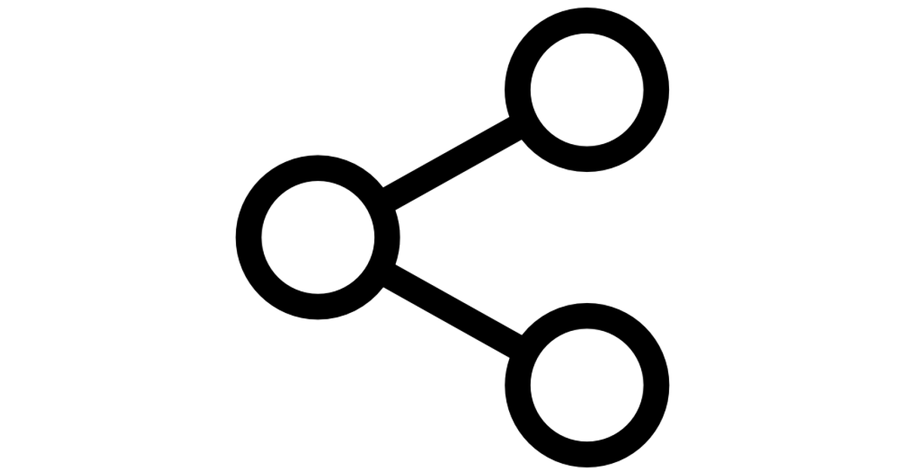

SysBusiness
Uma nova forma de fazer seu projeto acontecer.
O SysBusiness foi desenvolvido para auxiliar no desenvolvimento dos mais diversos tipos de projetos, pois grande parte dos problemas que ocorrem ao desenrolar de um projeto como, atrasos, dúvidas do que deve ser feito, imprevistos, etc, poderiam muito bem ser resolvidos com um bom planejamento.
Com um design simples, fácil de usar e focado num único objetivo que é de facilitar a administração dos seus trabalhos, o SysBusiness é a ferramenta perfeita, pois faz uma tarefa complexa se tornar extremamente fácil.
Mas...como funciona?
O SysBusiness permite que você crie uma conta para a sua empresa, para seus funcionários e gere os próprios projetos.
Assim você pode administrar como está andamento dos seus projetos, vendo quais funcionários estão trabalhando em cada um, as suas
respecitivas funções, se tudo está dentro do prazo ou não, etc.

Quais as vantagens?

Já que boa parte dos problemas durante o desenvolvimento de um projeto acontecem pela má gestão dele, que resultam em
dificuldades de execução, atrasos e perda de dinheiro, nossa aplicação permitirá que você controle o seu projeto do começo
ao fim, evitando assim esses contratempos.